レア
疲れた会社員の肩にそっと手を置く
疲れた会社員の肩に、淡い光とともにそっと手を置く場面。物語の終盤でも描かれる、セラフィナの本分そのものです。第4弾「癒しの天使のお仕事編」の看板を飾る一枚。
第4弾「癒しの天使のお仕事編」のカード全30種です。街の人々にそっと寄り添う、小さな癒しの場面を集めました。
カードの画像はWeb鑑賞用サイズです。原画の高解像度イラストは、この弾のイラストパックでご覧いただけます。
この弾の所持 0 / 30種（0%）― あと30種で、この弾はコンプリートです
カードの画像はWeb鑑賞用サイズです。原画の高解像度イラストは第4弾『癒しの天使のお仕事編』のパック紹介ページからBOOTHのパックでご覧いただけます。ガチャで所持しているカードには「所持 ×N」と表示されます。
レア
疲れた会社員の肩に、淡い光とともにそっと手を置く場面。物語の終盤でも描かれる、セラフィナの本分そのものです。第4弾「癒しの天使のお仕事編」の看板を飾る一枚。
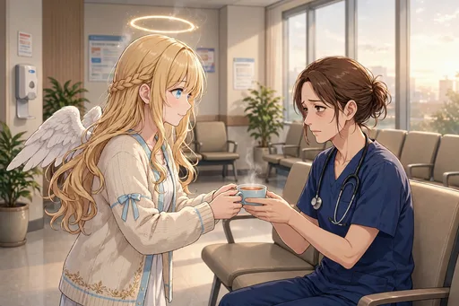
ノーマル
夜勤明けの看護師へ温かいお茶を渡す場面。人のために働く人の疲れにこそ、そっと寄り添います。
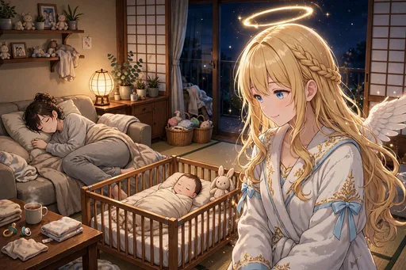
ノーマル
眠る母親のそばで静かに見守る場面。起こさないように、ただそこにいる優しさです。癒しは言葉だけではないことを描く一枚。
ノーマル
勉強中の学生の机に温かい飲み物をそっと置く場面。頑張る背中への、静かな応援です。
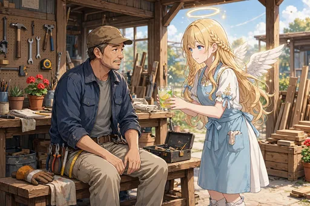
ノーマル
職人さんの休憩時間にふっと現れる場面。手を止めて一息つく時間の大切さを、一緒に味わっています。
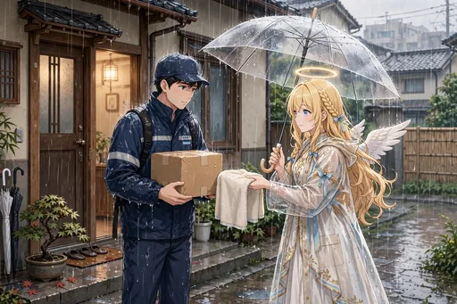
ノーマル
雨の日に濡れた配達員へタオルを差し出す場面。どんな天気でも荷物を届ける人への、ねぎらいの一枚です。

レア
サロンで施術の修行をする場面。練習台の同僚と向き合いながら、癒しの手技を真剣に学んでいます。天使も修行の身です。
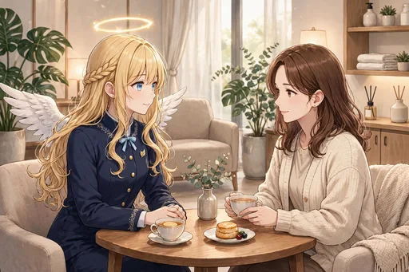
ノーマル
常連客の話にじっくり耳を傾ける場面。技術だけでなく「聞く」ことも、癒しの大切な一部です。

ノーマル
アロマオイルを選ぶ真剣な顔。相手の様子に合わせて香りを選ぶのは、セラピストとしての腕の見せどころです。
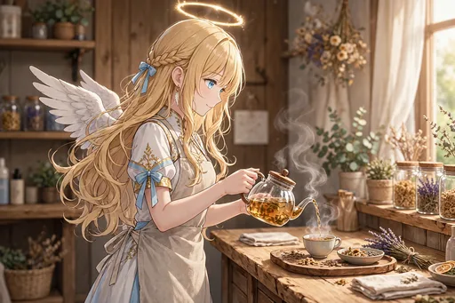
ノーマル
ハーブティーを丁寧に淹れる場面。湯気と香りに包まれる時間そのものが、癒しの始まりです。
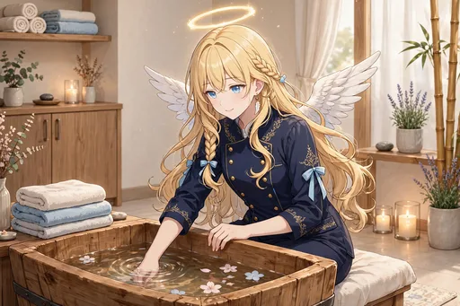
ノーマル
足湯の準備をする場面。湯の加減を確かめながら、来る人のくつろぎを想像して整えています。
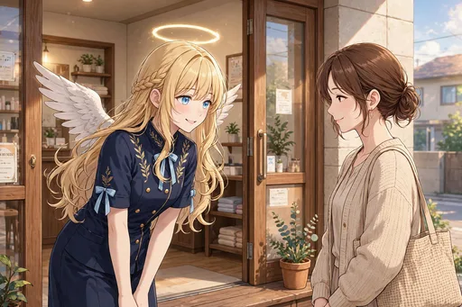
ノーマル
お客さんを笑顔で見送る場面。「今日もおつかれさまです」の一言とともに、また来たくなる時間を締めくくります。
ノーマル
寝落ちした人の毛布をそっと直す場面。気づかれないくらいの優しさが、セラフィナらしい癒しです。
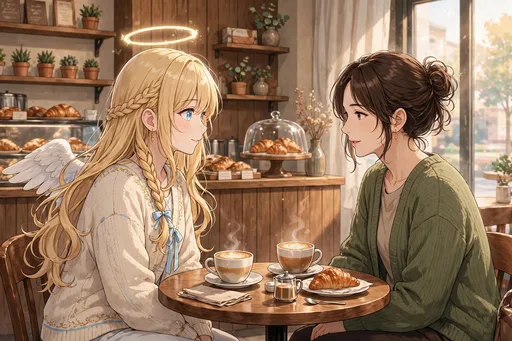
ノーマル
喫茶店で悩み相談に寄り添う場面。答えを急がず、話し手のペースに合わせて静かに聞き続けます。
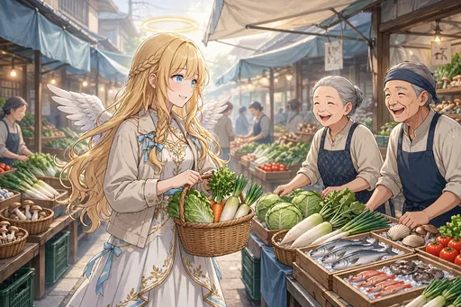
ノーマル
朝の市場で元気に挨拶を交わす場面。働く人たちの活気が、街の一日を動かしています。その輪の中にいる一枚です。
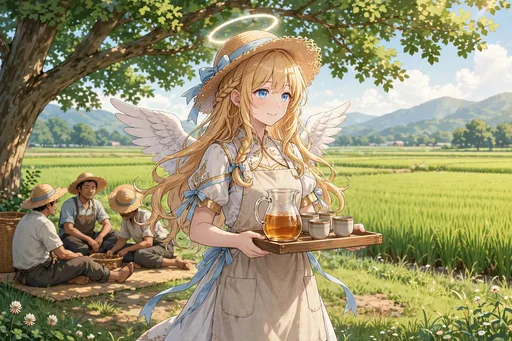
ノーマル
農作業の休憩に麦茶を運ぶ場面。日差しの下で働く人への、冷たい一杯のねぎらいです。
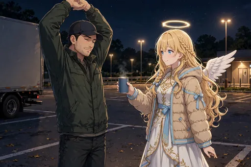
ノーマル
長距離ドライバーの休憩所でねぎらう場面。夜通し走る人の安全と疲れに、心を配っています。
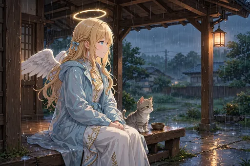
ノーマル
雨宿りの猫と一緒に雨を眺める場面。人でなくても、疲れた存在にはそっと寄り添います。相棒モコとの日々を思わせる一枚です。
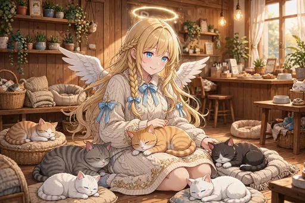
レア
猫カフェで猫たちに囲まれる場面。癒す側の天使も、猫にはすっかり癒されています。モコが少し嫉妬しそうな光景です。
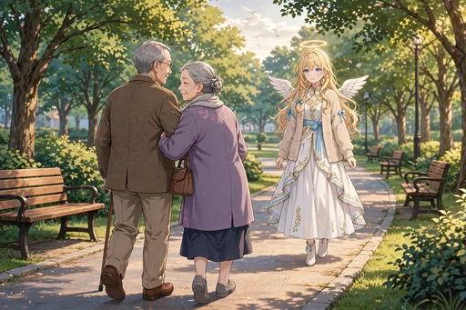
ノーマル
老夫婦の散歩にそっと同行する場面。ゆっくりした歩調に合わせる時間も、大切な見守りです。
ノーマル
駅で迷っている人の道案内をする場面。困っている人に気づくのは、癒しの天使の得意分野です。
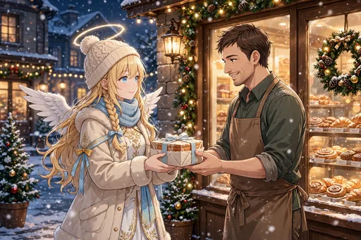
レア
クリスマスに働く人へケーキを届ける場面。みんなが休む日に働く人へこそ、感謝を届けます。
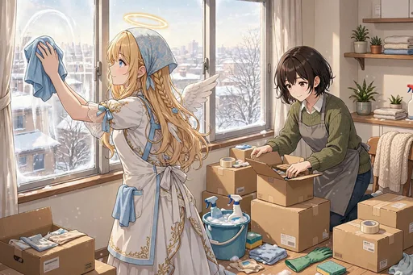
ノーマル
年末の掃除を手伝う場面。一年の汚れを落とす作業も、誰かと一緒なら立派な癒しの時間です。
ノーマル
「がんばらなくていい日もある」と伝える、壁紙向けの穏やかな一枚。休むことを肯定する言葉は、この物語全体の芯でもあります。
レア
満月の夜に祈る場面。地上の人々の安らぎを願う、天使本来の姿です。静けさの美しい一枚。
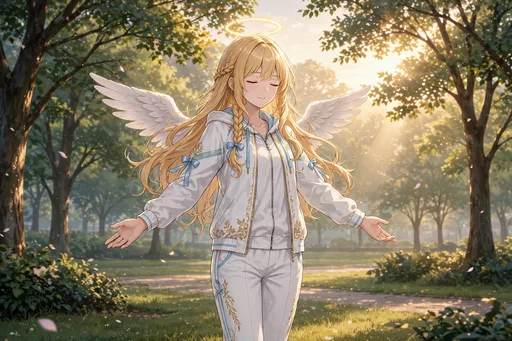
ノーマル
朝日のなかで深呼吸をする場面。一日の始まりに心を整える、小さな儀式です。
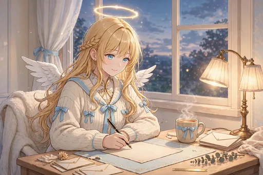
ノーマル
おつかれさまの手紙を書く場面。言葉にして届ける感謝も、セラフィナの癒しの形のひとつです。
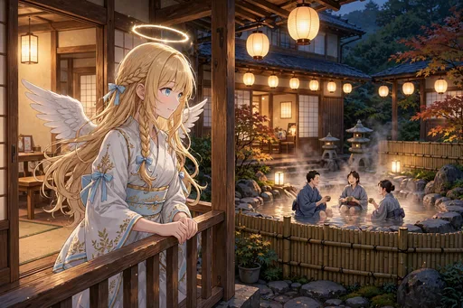
レア
温泉で湯上がりの人々の笑顔を見守る場面。ほっとした表情を見るのが、何よりの喜びです。第1弾の銭湯・サウナ体験ともつながる一枚。
レア
空から街の灯りを見守る場面。一つひとつの灯りの向こうにある暮らしを想いながら、今夜も見守り続けます。

激レア
天界の上司への報告の場面。「みなさん、がんばっています」と伝えるその報告は、地上で見てきた人々への愛着そのものです。第4弾の締めくくりを飾る一枚。